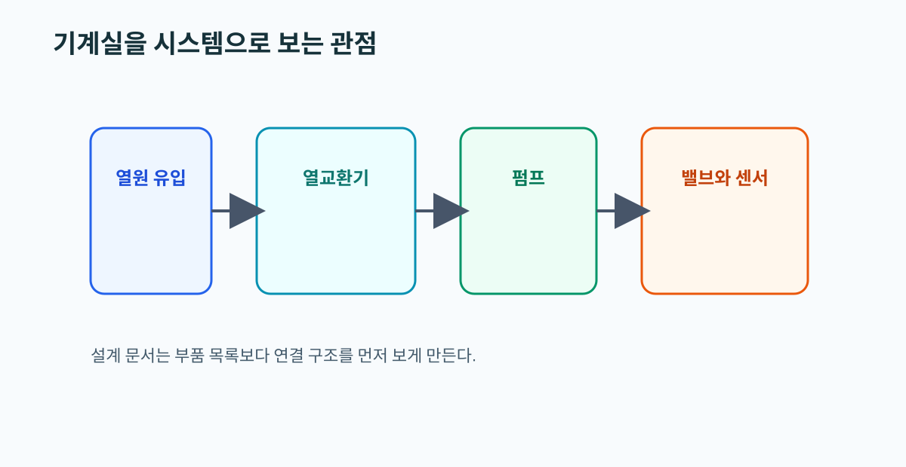

05. District Heating Substations Design 요약
왜 읽어야 하는가
이 문서는 기계실을 부품 목록이 아니라 하나의 연결 시스템으로 보게 만든다. HeatGrid가 센서, 부품, 고장을 자연스럽게 이어 붙이려면 바로 이 관점이 필요하다.
이 문서를 읽고 나면 할 수 있는 것
- 기계실 구성요소를 큰 그림으로 설명할 수 있다.
- 한 부품 이상이 왜 다른 부품 신호에도 영향을 주는지 이해할 수 있다.
- 설계 문서를 센서-고장 매핑 관점으로 읽을 수 있다.

핵심 개념
- substation은 열교환기, 펌프, 밸브, 센서, 계측기, 안전장치가 연결된 시스템이다.
- 예방정비, 상태기반 정비, 사후정비는 설비 구조를 알 때 비로소 제대로 구분된다.
실무 예시
유량 저하가 보일 때 현장에서는 펌프 하나만 보지 않는다. 필터 막힘, 열교환기 상태, 밸브 반응, 차압 변화를 같이 보며 시스템 전체를 의심한다.
PreDist 연결 예시
PreDist에서 유량과 온도차가 같이 흔들리면 단일 센서 이상보다 순환계통 또는 열교환 효율 문제 후보를 먼저 올리는 식으로 연결할 수 있다.
HeatGrid 적용 포인트
- Agent는 “부품 하나가 고장났다”보다 “연결 구조상 어떤 계통이 흔들린다”는 설명을 해야 한다.
- 센서와 부품을 1대1로 묶기보다 계통 단위 관계를 함께 보여줘야 한다.
초심자 체크포인트
- 기계실을 단일 부품이 아니라 시스템으로 설명할 수 있는가
- preventive maintenance와 corrective maintenance 차이를 말할 수 있는가
- 센서 이상을 설비 구조와 연결해 해석할 수 있는가